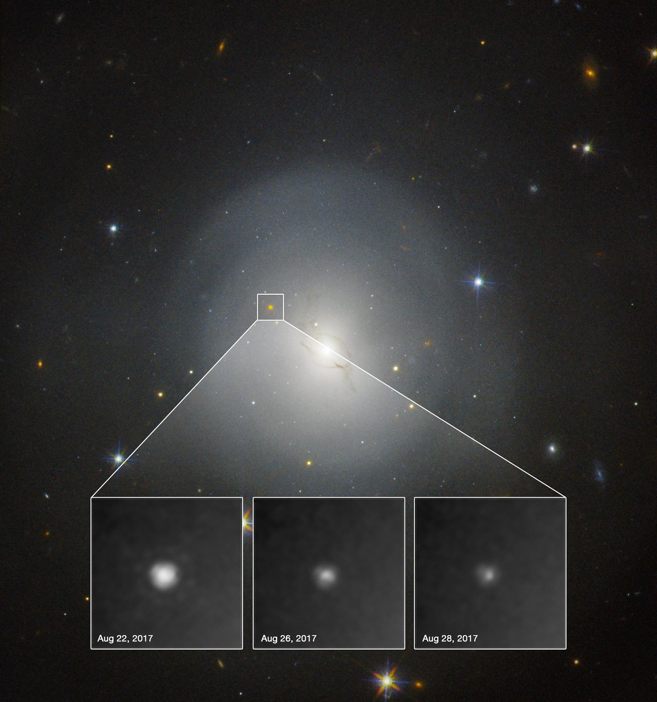

Multimessenger astronomy is the coordinated observation and interpretation of multiple distinct types of cosmic signals — electromagnetic radiation, gravitational waves, neutrinos, and cosmic rays — from the same astronomical source or event, enabling a more complete physical picture than any single messenger can provide alone.

NASA and ESA. Acknowledgment: A.J. Levan (U. Warwick), N.R. Tanvir (U. Leicester), and A. Fruchter and O. Fox (STScI)
The four messengers differ fundamentally in how they are produced and how they travel. Electromagnetic radiation spans radio waves to gamma rays but is absorbed or scattered by intervening matter and cannot escape the interiors of dense objects. Gravitational waves are ripples in spacetime caused by accelerating masses; they pass through matter unimpeded and directly encode the dynamics of compact object mergers. Neutrinos are nearly massless, chargeless particles produced in nuclear reactions; they escape the cores of supernovae where photons are trapped. Cosmic rays are highly energetic charged particles that are deflected by magnetic fields and cannot generally be traced back to their sources without correlated detections in other messengers.
The founding multimessenger event was Supernova 1987A in the Large Magellanic Cloud, some 168,000 light-years away. On February 23, 1987, a burst of approximately 25 antineutrinos was recorded across three detectors (Kamiokande-II, IMB, and Baksan) in under 13 seconds, arriving 2–3 hours before the optical discovery. The neutrino burst confirmed that roughly 99% of a core collapse's energy — around 1046 J — is radiated in neutrinos, and established neutrino astronomy as a practical observational tool.
The modern multimessenger era is widely dated to August 17, 2017, when LIGO and Virgo detected gravitational waves from a binary neutron star merger (GW170817) in the galaxy NGC 4993, approximately 130 million light-years away. Just 1.74 seconds later, the Fermi satellite detected a short gamma-ray burst, GRB 170817A. The time delay between the two signals constrains the difference in speed between gravitational waves and light to less than one part in 1015. About 70 optical astronomy partners then identified the kilonova SSS17a approximately 11 hours later, revealing the production of heavy elements including gold and platinum through rapid neutron capture (r-process) nucleosynthesis — confirming neutron star mergers as a major site of heavy element production. GRB 170817A was 2–6 orders of magnitude less luminous than typical short gamma-ray bursts, consistent with the jet being directed away from the line of sight.
A second landmark came on September 22, 2017, when the IceCube Neutrino Observatory detected a ~290 TeV muon neutrino (IceCube-170922A) and issued automated alerts within minutes. The source was identified as the blazar TXS 0506+056, approximately 5.7 billion light-years away and in an active gamma-ray flaring state — the first time a neutrino detector had localised an extragalactic cosmic-ray source.
Coordinating infrastructure includes the Supernova Early Warning System (SNEWS), founded in 1999, which pools multiple neutrino detectors to provide automated supernova alerts; and the Astrophysical Multimessenger Observatory Network (AMON), founded in 2013, which shares sub-threshold events across observatories to identify coincidences no single detector could flag alone.
See also: gravitational waves, gamma-ray burst, neutrino, supernova, cosmic rays, neutron star